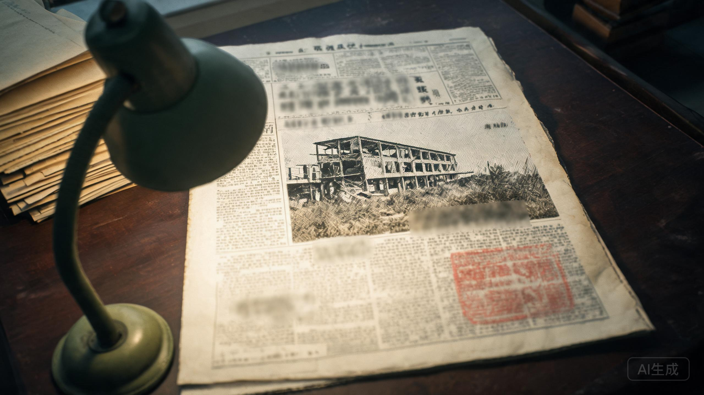

《燕赵晚报》头版 · 1998年10月8日 · 星期四
“三十年老厂房夷为平地。一名职工下落不明。”

三十年老厂房夷为平地。地下层提前封闭。一名职工至今下落不明。
本报讯 10月7日深夜23时40分，第四制药厂主楼实施定向爆破。爆破前六小时，厂区开始清场。据改制领导小组一名工作人员称，地下层于当晚22时整封闭，“是为了防止有人误入”。
失踪的职工名叫陈卫东，四十八岁，仓库保管员，工号04071。门卫登记簿显示，他于17时58分离厂，此后没有再次进入厂区的记录。家属说，他傍晚回过家。
今天凌晨，搜救人员在倒塌的主楼地下层入口发现一只解放鞋。鞋码42。现场没有发现遗体。搜救已于上午十时暂停。
第四制药厂始建于1968年，曾以“安宁”牌营养剂闻名。1998年，全厂改制，主楼与仓库一并拆除。厂长郑国华未接受采访。
本报将继续关注此事。有知情者请与桥西分局联系。
报纸的边角被人用铅笔写了一行小字：“他17:58就走了。22:00门才封。”
这句话像在替父亲辩解，又像在提醒读报的人：中间那四个小时，没有记录。
剪报背面还有一行更淡的字：“去问门卫。登记簿不会说谎。”